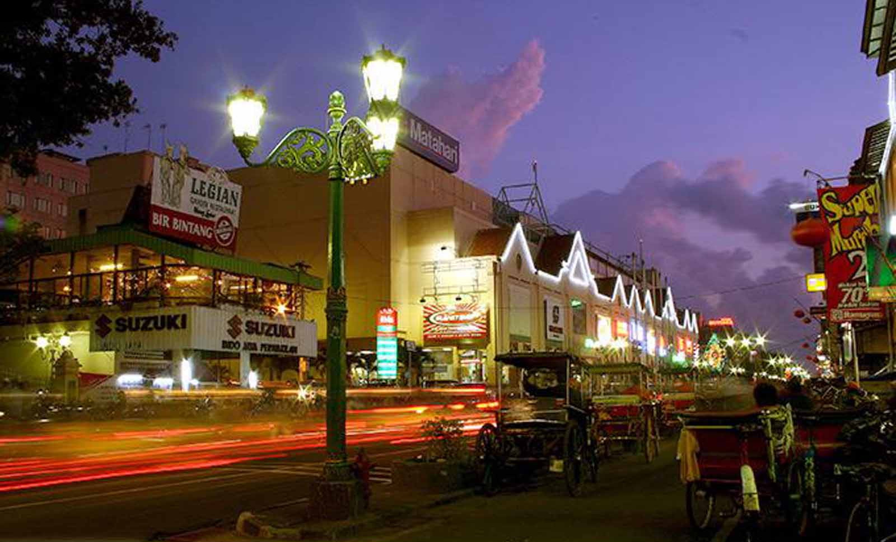
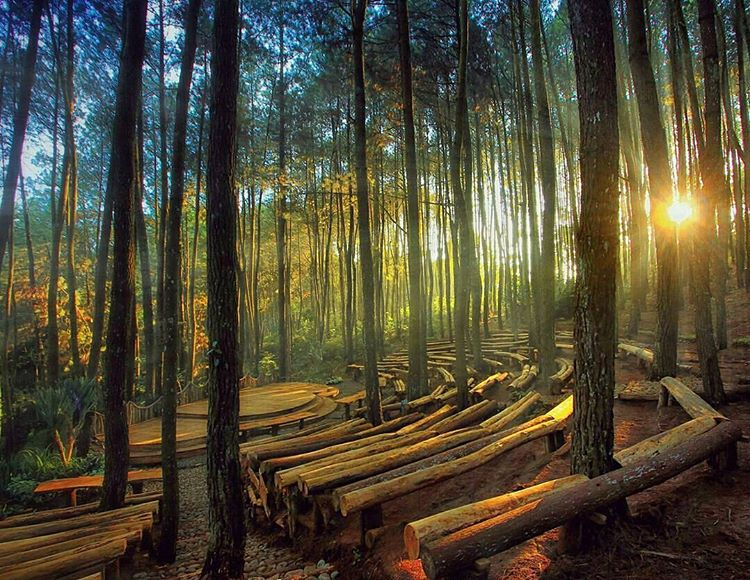
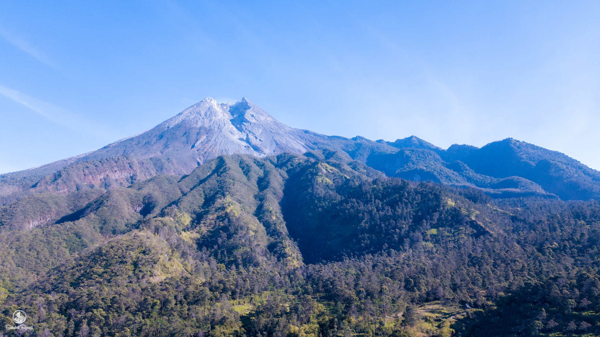

Sejarah

Berdirinya kota yogyakarta berawal dari adanya perjanjian Gianti pada tanggal 13 Februari 1755 yang ditandatangani
Kompeni Belanda di bawah tanda tangan Gubernur Nicholas Hartingh atas nama Gubernur Jendral Jacob Mossel. Adapun daerah
daerah yang menjadi kekuasaanya adalah Mataram (Yogyakarta), Pojong, Sukowati, Bagelen, Kedu, Bumigede dan ditambah daerah
mancanegara yaitu, Madiun, Magetan, Cirebon, Separuh Pacitan, Kartosuro, Kalangbret, Tulungangung, Mojokerto, Bojonegoro,
Ngawen, Sela, Kuwu, Wonosari, Grobogan.
Setelah selesai Perjanjian Pembagian Daerah itu, Pengeran Mangkubumi yang bergelar Sultan Hamengku Buwono I segera
menetapkan bahwa Daerah Mataram yang ada di dalam kekuasaannya itu diberi nama Ngayogyakarta Hadiningrat
dan beribukota di Ngayogyakarta (Yogyakarta). Ketetapan ini diumumkan pada tanggal 13 Maret 1755.
Tempat yang dipilih menjadi ibukota dan pusat pemerintahan ini ialah Hutan yang disebut Beringin, dimana telah ada sebuah
desa kecil bernama Pachetokan, sedang disana terdapat suatu pesanggrahan dinamai Garjitowati, yang dibuat oleh Susuhunan
Paku Buwono II dulu dan namanya kemudian diubah menjadi Ayodya. Setelah penetapan tersebut diatas diumumkan, Sultan
Hamengku Buwono segera memerintahkan kepada rakyat membabad hutan tadi untuk didirikan Kraton.
Sebelum Kraton itu jadi, Sultan Hamengku Buwono I berkenan menempati pasanggrahan Ambarketawang daerah Gamping, yang tengah
dikerjakan juga. Menempatinya pesanggrahan tersebut resminya pada tanggal 9 Oktober 1755. Dari tempat inilah beliau selalu
mengawasi dan mengatur pembangunan kraton yang sedang dikerjakan.
Setahun kemudian Sultan Hamengku Buwono I berkenan memasuki Istana Baru sebagai peresmiannya. Dengan demikian berdirilah
Kota Yogyakarta atau dengan nama utuhnya ialah Negari Ngayogyakarta Hadiningrat. Pesanggrahan Ambarketawang ditinggalkan
oleh Sultan Hamengku Buwono untuk berpindah menetap di Kraton yang baru. Peresmian mana terjadi Tanggal 7 Oktober 1756.
Kota Yogyakarta dibangun pada tahun 1755, bersamaan dengan dibangunnya Kerajaan Ngayogyakarta Hadiningrat oleh Sri Sultan
Hamengku Buwono I di Hutan Beringin, suatu kawasan diantara sungai Winongo dan sungai Code dimana lokasi tersebut nampak
strategi menurut segi pertahanan keamanan pada waktu itu
Sesudah Proklamasi Kemerdekaan 17 Agustus 1945, Sri Sultan Hamengku Buwono IX dan Sri Paduka Paku Alam VIII menerima piagam
pengangkatan menjadi Gubernur dan Wakil Gubernur Propinsi DIY dari Presiden RI, selanjutnya pada tanggal 5 September 1945
beliau mengeluarkan amanat yang menyatakan bahwa daerah Kesultanan dan daerah Pakualaman merupakan Daerah Istimewa yang menjadi
bagian dari Republik Indonesia menurut pasal 18 UUD 1945. Dan pada tanggal 30 Oktober 1945, beliau mengeluarkan amanat kedua
yang menyatakan bahwa pelaksanaan Pemerintahan di Daerah Istimewa Yogyakarta akan dilakukan oleh Sri Sultan Hamengkubuwono IX dan
Sri Paduka Paku Alam VIII bersama-sama Badan Pekerja Komite Nasional.
Geografis

Secara garis besar Kota Yogyakarta merupakan dataran rendah dimana dari barat ke timur relatif datar dan dari utara ke selatan memiliki
kemiringan ± 1 derajat, serta terdapat 3 sungai yang melintas Kota Yogyakarta, yaitu:
Sebelah timur adalah Sungai Gajah Wong
Bagian tengah adalah Sungai Code
Sebelah Barat adalah Sungai Winongo
Kota Yogyakarta memilki luas wialayah tersempit dibandingkan dengan daerah tingkat II lainnya, yaitu 32,5Km² yang berarti 1,025% dari
luas wilayah Provinsi DIY. Dengan luas 3.250 hektar tersebut terbagi menjadi 14 Kecamatan, 45 Kelurahan, 617 RW, dan 2.531 RT, serta
dihuni oleh 428.282 jiwa (sumber data dari SIAK per tanggal 28 Februari 2013 dengan kepadatan rata-rata 13.177 jiwa/Km².
Tipe iklim "AM dan AW", curah hujan rata-rata 2.012 mm/tahun dengan 119 hari hujan, suhu rata-rata 27,2°C dan kelembaban rata-rata 24,7%.
Angin pada umumnya bertiup angin muson dan pada musim hujan bertiup angin barat daya dengan arah 220° bersifat basah dan mendatangkan hujan,
pada musim kemarau bertiup angin muson tenggara yang agak kering dengan arah ±90° - 140° dengan rata-rata kecepatan 5-16 knot/jam.
Wisata
Kita mengenal Yogyakarta adalah kota yang istimewa dengan Istana Sultan Yogyakarta atau Keraton Yogyakarta dimana keluarga Sultan masih
tinggal di istana tersebut sampai sekarang. Istana ini juga terbuka untuk umum tetapi tidak semua bangunan, hanya beberapa bangunan
yang bisa dilihat oleh masyarakat.
Tidak hanya itu, Yogyakarta juga terkenal dengan berbagai tempat wisatanya yang indah indah. Contohnya sebagai berikut:
1. Istana Ratu Boko

Istana Ratu Boko adalah sebuah bangunan megah yang dibangun pada masa pemerintahan Rakai Panangkaran, salah satu keturunan Wangsa Syailendra.
Istana ini awalnya bernama Abhayagiri Vihara yang artinya biara di bukit yang penuh kedamaian. tempat ini didirikan untuk menyepi dan memfokuskan
diri pada kehidupan spiritual. Berada di istana ini kita bisa merasakan kedamaian sekaligus melihat pemandangan kota Yogyakarta dan Candi Prambanan
dengan Latar Gunung Merapi.
Istana Ratu boko terletak di Jl. Raya Piyungan-Prambanan No.2, Gatak, Bokoharjo, KEc. Prambanan, Kabupaten Sleman, Daerah Istimewa Yogjakarta
kita dapat mengunjunginya setiap hari mulai pukul 06.00 - 17.00 dengan membayar tiket masuk sekitar Rp. 40.000,00 untuk dewasa dan Rp. 20.000,00 untuk anak anak.
2. Kalibiru

Tempat wisata yang satu ini akan menyuguhkan panorama alam berupa Bukit Menoreh dan Waduk Sermo.
Dari ketinggian sekitar 450 mdpl, pengunjung Kalibiru bahkan bisa melihat matahari kembali ke
peraduan saat senja tiba. Jika dewi fortuna sedang berpihak pada Anda, cuaca yang cerah akan membuat
ombak Pantai Selatan terlihat. Sehingga, paras cantik pemandangan akan nampak sempurna dari Kalibiru.
Kalibiru menyediakan fasilitas berupa tempat makan, tempat pertemuan, masjid, tempat parkir, dan penginpan.
Tiket masuk kesini relatif murah hanya Rp. 10.000,00/orang buka setiap hari mulai pukul 06.00-17.00 namun jika ingin kesini
datanglah agak sore untuk menikmati pemandangan sunset yang menakjubkan.
3. Malioboro

Malioboro dijadikan sebagai objek legendaris di yogyakarta menawarkan wisata belanja yang terdiri dari wisata tradisional dan wisata modern. Berbagai jenis
souvenir yang dijual oleh para pedagang yang berjejer di sepanjang jalan Malioboro seperti Kaos, Batik, Gantungan Kunci, Tas dan berbgai kerajinan yang terbuat
dari kayu, perak, kulit dan masih banyak lainnya.
jika kalian pergi ke yogyakarta wajib sekali datangi tempat wisata ini.
4. Hutan Pinus Imogiri

Hutan pinus ini berada di daerah Mangunan, Dlingo, Imogiri selatan Yogyakarta. Tempatnya yang sedikit di dataran tinggi membuat pohon pinus tumbuh
subur di daerah ini. Kondisinya yang masih sangat alami sangat cocok untuk berwisata bersama keluarga karena udaranya yang jauh dari polusi perkotaan.
Lokasinya yang juga ada di daerah pegunungan Mangunan, akan membuat anda menghirup udara yang sangat sejuk. Wisata ini dikelola oleh Resort Pengelola
Hutan (RPH) Mangunan, sehingga akan sangat terjamin kelayakan dan kebersihan hutannya.
Kawasan yang ditanami pohon pinus tersebut bukan hanya untuk tujuan wisata, namun juga sebagai hutan lindung. Sebelum menjadi salah satu destinasi wisata,
hutan ini adalah sebuah tanah tandus yang direboisasi. Bukan hanya pohon pinus, tapi juga ada banyak pohon lainnya seperti pohon mahoni, akasia, kemiri, dan kayu putih.
Tiket masuk ke Hutan Pinus Imogiri Mangunan Jogja ini hanya sebesar Rp. 5.000 saja, sangat murah bukan. Selain itu Anda juga perlu membayar retribusi parkir
sebesar Rp 3.000,00 untuk motor, Rp 5.000,00 untuk mobil, dan Rp 20.000 untuk bus. Cukup terjangkau bukan bahkan bisa dibilang liburan yang menyenangkan dan sangat ekonomis.
5. Pantai Nguluran

Pantai yang ada di daerah Gunungkidul ini meupakan salah satu destinasi wisata yang terkenal. Sebenarnya, pantai nguluran ini masih belum terkenal bagi wisatawan, baik itu
wisatawan nusantara maupun mancanegara. Tetapi, akhir-akhir ini pantai ini mulai ramai pengunjung karena terkenal dengan spot foto yang ciamik. Tidak tangungg-tanggung, ada
lima spot foto yang bagus banget buat selfie.
Uniknya, lima spot ini memiliki keunikan suasana dan nuansa yang berbeda. Sehingga, banyak wisatawan yang berbondong-bondong untuk mencoba sensai baru yang tidak terlupakan.
Karena spot foto yang bagus juga, membuat pantai ini sering menjadi tempat prewedding.
Untuk bisa masuk ke Pantai Nguluran, pengunjung cukup membayar Rp. 10.000. Tapi, untuk bisa masuk ke lima spot foto, kamu harus membayar tiket khusus. Berikut adalah rincian harga tiket masuk :
1. Teras Kaca : Rp. 25.000,00
2. Glass Boat : Rp. 30.000,00
3. Becak Terbang : Rp. 10.000,00
4. Giant Chair : Rp. 10.000,00
Kalo misalkan kamu gabawa kamera yang mumpuni, kamu bisa menyewa fotografer dengan harga Rp. 5.000,00 Lalu untuk tarif parkir, kendaraan bermotor cukup membayar Rp. 3.000,
Rp.10.000 untuk mobil, dan Rp. 30.000 untuk rombongan bus. Sedangkan untuk paket prewedding, kamu dikenakan biaya sebesar 200 ribu hingga 30o ribu untuk per sesinya.
Pantai ini terletak di Dusun Bolang, Desa Girikarto, Kecamatan Panggang, Gunungkidul. Untuk bisa ke Pantai Nguluran, wajib menggunakan kendaraan pribadi.
Hal ini karena belum adanya transportasi umum yang langsung mengantarkan ke lokasi.
6. Bukit Klangon

Bukit Klangon adalah salah satu Spot terbaik untuk melihat Gunung Merapi dari dekat serta kota Yogyakarta dari ketinggian, di perkuat dengan hawa khas
pegunungan yang sejuk di sertai semilir angin, di dukung cuaca yang cerah dengan langit biru bersih tanpa awan kalimat "Nikmat mana yang dapat kau dustakan"
sangat cocok untuk menggambarkan suasana itu.
Kawasan wisata bukit ini tidak memiliki jam operasional. Objek wisata ini selalu buka dari pagi hingga sore hari. Sehingga, pengunjung dapat menikmati keindahannya di waktu kapanpun.
kalian juga hanya dikenakan biaya Rp. 15.000,00 saja. Bukit Klangon ini beralamatkan di Kalitengah Lor, Glagaharjo, Cangkringan, Sleman Regency, DI Yogyakarta.